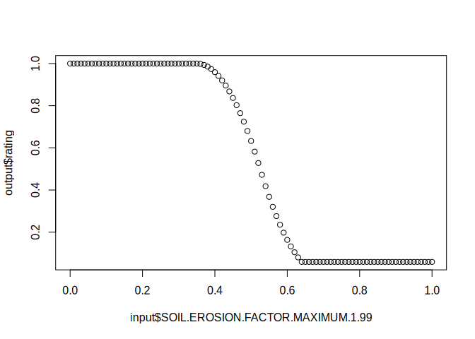

To install the alpha version of the “interpretation engine” R package use {remotes} to get the latest version from GitHub. This will install all dependencies.
Interpretations Outside of NASIS
There are many reasons for wanting to develop, test, and apply interpretations to soil data outside the context of NASIS. This project aims to create a prototype from existing interpretation rules, evaluations, and properties as managed in NASIS. Once the prototype is complete it should be possible to generate fuzzy ratings from arbitrary sources of soil and environmental data sources.
How Does it Work?
The data.tree package defines objects and methods that are well suited to the task of describing the hierarchy of rules and evaluations. NASIS evaluations utilize definitions of shape functions and cubic splines, which are further interpolated using approxfun() and splinefun(). NASIS hedges and operators perform arithmetic operations on numeric matrices to facilitate combining multiple properties and evaluations into rules.
Outline
- Load all rules, evaluations, properties into R via ODBC as
data.frameobjects - Load single rule and (recursively) load sub-rules into a
data.treeobject - Load evaluation functions into each terminal node of
data.treeobject - Load hedge and operator functions into each decision node of
data.treeobject - Use wrapper function (
interpret()) to:- Send properties to evaluation functions
- Combine fuzzy values via operators and hedges to generate a final fuzzy rating
Examples
Evaluation Curves
The following images show the output of an evaluation function for slope ("*Storie Factor C Slope 0 to 100%") in NASIS.
eval <- subset(NASIS_evaluations, evalname == "*Storie Factor C Slope 0 to 100%")
plotEvaluation(eval, xlim = c(0, 100))
Rule Trees
The following examples generate data.frame representation of the data.tree objects in terms of an input property list, and the hierarchy of rules, operators, hedges, evaluations and properties that define a “primary rule” or interpretation.
Dust PM10 and PM2.5 Generation
# use initRuleset() to parse a rule by name
r <- initRuleset("Dust PM10 and PM2.5 Generation")
# view input properties
getPropertySet(r)
#> evaluation
#> 1 Dryness Index 0.5 to 3
#> 2 Dust from Gypsum Content 2 to 15 Percent
#> 3 Dust from Silt and Clay Content 20 to 70 Percent Sand
#> propname propiid
#> 1 DRYNESS INDEX 15302
#> 2 WTD_AVG GYPSUM 0-50cm OR ABOVE RESTRICTION 15300
#> 3 WTD_AVG SAND CONTENT 0-50cm OR ABOVE RESTRICTION, NO O 15301
# view rule tree
data.tree::ToDataFrameTree(r, "Type", "Value", "RefId", "rule_refid")
#> levelName
#> 1 Dust PM10 and PM2.5 Generation
#> 2 °--RuleHedge_de473ab5
#> 3 °--RuleOperator_0a397761
#> 4 ¦--Dryness Index 0.5 to 3
#> 5 °--RuleOperator_7025ab26
#> 6 ¦--Dust Due to Gypsum
#> 7 ¦ °--RuleHedge_5c18cb73
#> 8 ¦ °--Dust from Gypsum Content 2 to 15 Percent
#> 9 °--Dust Due to Silt and Clay
#> 10 °--RuleHedge_caf7e2e0
#> 11 °--Dust from Silt and Clay Content 20 to 70 Percent Sand
#> Type Value RefId rule_refid
#> 1 <NA> <NA> <NA> <NA>
#> 2 multiply 0.5 <NA> <NA>
#> 3 product <NA> <NA> <NA>
#> 4 <NA> <NA> 18448 <NA>
#> 5 sum <NA> <NA> <NA>
#> 6 <NA> <NA> 23659 23659
#> 7 not_null_and 0 <NA> <NA>
#> 8 <NA> <NA> 18446 <NA>
#> 9 <NA> <NA> 23661 23661
#> 10 null_not_rated 0 <NA> <NA>
#> 11 <NA> <NA> 18447 <NA>California Storie Index
Using the data.tree representation of the California Storie Index primary rule, we can extract the entire set of evaluations and required properties:
r <- initRuleset("AGR - California Revised Storie Index (CA)")
# view input properties
getPropertySet(r)
#> evaluation
#> 1 *Storie Factor A Pedon Group not rated taxonomy rev
#> 2 *Storie Factor A Pedon Group 1 and 2 soil depth
#> 6 *Storie Factor A Pedon Group 1 suborders
#> 7 *Storie Factor A Pedon Group 1 great groups
#> 8 *Storie Factor A Pedon Group 1 subgroups
#> 9 *Storie Factor A Pedon Group 7, 8, 9 landform
#> 58 *Storie Factor A Pedon Group 2 suborders Arents and Cambids
#> 59 *Storie Factor A Pedon Group 2 great groups
#> 60 *Storie Factor A Pedon Group 3 great groups
#> 61 *Storie Factor A Pedon Group 4/6 great groups
#> 65 *Storie featkind = abrupt textural change
#> 69 Component restriction = "abrupt textural change"
#> 73 *Storie Factor A Pedon Group 3 soil depth
#> 74 *Storie Factor A Pedon Group 5 soil depth
#> 75 *Storie Factor A Pedon Group 5 durids
#> 76 *Storie Factor A Pedon Group 5 great groups
#> 77 *Storie Factor A Pedon Group 5 subgroups
#> 78 *Storie Factor A Pedon Group 4/6 depth abrupt text featkind
#> 79 *Storie Factor A Pedon Group 4/6 depth abrupt tex reskind
#> 80 *Storie Factor A Pedon Group 7 and 8 soil depth
#> 81 *Storie Factor A Pedon Group 9 soil depth
#> 82 *Storie Factor B Surface Texture
#> 83 *Storie Factor B rock frag volume 0-25 cm
#> 84 *Storie Factor C Slope 0 to 100%
#> 85 *Storie Factor X Toxicity EC maximum 0-25 cm
#> 86 *Storie Factor X Toxicity SAR maximum 0-25 cm
#> 87 *Storie Factor X Toxicity pH minimum 0-25 cm
#> 88 *Storie Factor X Toxicity pH maximum 0-25 cm
#> 89 *Storie Factor X drainage class = moderately
#> 90 *Storie component local phase is *drained*
#> 99 *Storie component local phase is *partially drained*
#> 108 *Storie Factor X drainage class = somewhat poorly
#> 109 *Storie Factor X drainage class = poor or very poorly
#> 110 *Storie Factor X drainage class = well
#> 111 *Storie Factor X drainage class = all excessively
#> 112 *Storie Factor X landscape ponding in growing season
#> 113 Landscape Flooding "NONE"
#> 114 *Storie Factor X landscape flooding in growing season
#> 115 *Storie Factor X erosion class = 1
#> 119 *Storie Factor X erosion class = 2
#> 123 *Storie Factor X erosion class = 3
#> 127 *Storie Factor X erosion class = 4
#> 131 *Storie Factor X erosion class = 0
#> 135 *Storie Factor X landscape wetness, grow. season, 25-100
#> 136 *Storie Factor X temperature regime
#> propname propiid
#> 1 TAXONOMIC ORDER 85
#> 2 *Storie depth to first restriction for Profile Group 1-3 12184
#> 6 TAXONOMIC SUBORDER 87
#> 7 TAXONOMIC GREAT GROUP 83
#> 8 TAXONOMIC SUBGROUP 86
#> 9 *Storie landforms in hills and mountains of California 12170
#> 58 TAXONOMIC SUBORDER 87
#> 59 TAXONOMIC GREAT GROUP 83
#> 60 TAXONOMIC GREAT GROUP 83
#> 61 TAXONOMIC GREAT GROUP 83
#> 65 *Storie where at least one cdfkind = abrupt textural change 12315
#> 69 Component restrictions 11293
#> 73 *Storie depth to first restriction for Profile Group 1-3 12184
#> 74 *Storie depth to pan for Profile Group 5 12164
#> 75 TAXONOMIC SUBORDER 87
#> 76 TAXONOMIC GREAT GROUP 83
#> 77 TAXONOMIC SUBGROUP 86
#> 78 *Storie depth to featknd abrupt tex change Profile Group 4/6 12376
#> 79 *Storie depth to reskind abrupt tex change Profile Grp 4/6 12375
#> 80 *Storie depth to hard bedrock/petro* for Profile Grp 7/8/9 12168
#> 81 *Storie depth to soft bedrock or densics for Profile Grp 7-9 12186
#> 82 *Storie texture score - first horizon below duff 42006
#> 83 ROCK FRAG VOLUME IN DEPTH 0-25 cm OR RESTRICTION 42009
#> 84 Slope, rv 12042
#> 85 EC MAXIMUM IN DEPTH 0-25 CM BELOW DUFF 42002
#> 86 SAR MAXIMUM IN DEPTH 0-25 CM BELOW DUFF 42003
#> 87 pH MINIMUM IN DEPTH 0-25 CM BELOW DUFF 42000
#> 88 pH MAXIMUM IN DEPTH 0-25 CM BELOW DUFF 42001
#> 89 GRL-DRAINAGE CLASS 10345
#> 90 **Storie component local phase is drained 12335
#> 99 **Storie component local phase is partially drained 12334
#> 108 GRL-DRAINAGE CLASS 10345
#> 109 GRL-DRAINAGE CLASS 10345
#> 110 GRL-DRAINAGE CLASS 10345
#> 111 GRL-DRAINAGE CLASS 10345
#> 112 *Storie ponding interaction max in growing season 12329
#> 113 FLOODING FREQUENCY (Maximum Frequency) 28
#> 114 *Storie flooding interaction max in growing season 12189
#> 115 Erosion Class in component table 12377
#> 119 Erosion Class in component table 12377
#> 123 Erosion Class in component table 12377
#> 127 Erosion Class in component table 12377
#> 131 Erosion Class in component table 12377
#> 135 *Storie near surface wetness rv depth in growing season 12584
#> 136 *Storie temperature regime score 42014
# view rule tree
data.tree::ToDataFrameTree(r, "Type", "Value", "RefId", "rule_refid")
#> levelName
#> 1 AGR - California Revised Storie Index (CA)
#> 2 °--RuleOperator_31a1eb65
#> 3 ¦--*Storie Factor A Not Rated Soil Orders rev
#> 4 ¦ °--RuleHedge_1193d3c1
#> 5 ¦ °--*Storie Factor A Pedon Group not rated taxonomy rev
#> 6 ¦--*Storie Factor A
#> 7 ¦ °--RuleOperator_01948bb8
#> 8 ¦ ¦--*Storie Factor A Profile Group 1 rev
#> 9 ¦ ¦ °--RuleOperator_a72ba798
#> 10 ¦ ¦ ¦--RuleOperator_b267bf8e
#> 11 ¦ ¦ ¦ ¦--*Storie Factor A Profile Group 1 and 2 fuzzy depth
#> 12 ¦ ¦ ¦ ¦ °--RuleHedge_7fad1a79
#> 13 ¦ ¦ ¦ ¦ °--*Storie Factor A Pedon Group 1 and 2 soil depth
#> 14 ¦ ¦ ¦ °--*Storie Factor A Profile Group 1 taxonomy rev
#> 15 ¦ ¦ ¦ °--RuleOperator_4d1fdd8f
#> 16 ¦ ¦ ¦ ¦--RuleHedge_44b2d8f3
#> 17 ¦ ¦ ¦ ¦ °--*Storie Factor A Pedon Group 1 suborders
#> 18 ¦ ¦ ¦ ¦--RuleHedge_f2a5b4ba
#> 19 ¦ ¦ ¦ ¦ °--*Storie Factor A Pedon Group 1 great groups
#> 20 ¦ ¦ ¦ °--RuleHedge_25e606a5
#> 21 ¦ ¦ ¦ °--*Storie Factor A Pedon Group 1 subgroups
#> 22 ¦ ¦ °--RuleHedge_ea4b1839
#> 23 ¦ ¦ °--*Storie Factor A Profile Group 7,8,9 landform
#> 24 ¦ ¦ °--RuleHedge_608f03c8
#> 25 ¦ ¦ °--*Storie Factor A Pedon Group 7, 8, 9 landform
#> 26 ¦ ¦--*Storie Factor A Profile Group 2 rev
#> 27 ¦ ¦ °--RuleOperator_8a20de79
#> 28 ¦ ¦ ¦--RuleOperator_71911310
#> 29 ¦ ¦ ¦ ¦--*Storie Factor A Profile Group 1 and 2 fuzzy depth
#> 30 ¦ ¦ ¦ ¦ °--RuleHedge_7fad1a79
#> 31 ¦ ¦ ¦ ¦ °--*Storie Factor A Pedon Group 1 and 2 soil depth
#> 32 ¦ ¦ ¦ °--*Storie Factor A Profile Group 2 taxonomy
#> 33 ¦ ¦ ¦ °--RuleOperator_0ad34d47
#> 34 ¦ ¦ ¦ ¦--RuleHedge_698c3a67
#> 35 ¦ ¦ ¦ ¦ °--*Storie Factor A Pedon Group 2 suborders Arents and Cambids
#> 36 ¦ ¦ ¦ °--RuleHedge_8fbcb397
#> 37 ¦ ¦ ¦ °--*Storie Factor A Pedon Group 2 great groups
#> 38 ¦ ¦ °--RuleHedge_ea4b1839
#> 39 ¦ ¦ °--*Storie Factor A Profile Group 7,8,9 landform
#> 40 ¦ ¦ °--RuleHedge_608f03c8
#> 41 ¦ ¦ °--*Storie Factor A Pedon Group 7, 8, 9 landform
#> 42 ¦ ¦--*Storie Factor A Profile Group 3
#> 43 ¦ ¦ °--RuleOperator_a84c18cd
#> 44 ¦ ¦ ¦--*Storie Factor A Profile Group 3 taxonomy
#> 45 ¦ ¦ ¦ °--RuleOperator_c859411b
#> 46 ¦ ¦ ¦ ¦--RuleHedge_a14e5a0e
#> 47 ¦ ¦ ¦ ¦ °--*Storie Factor A Pedon Group 3 great groups
#> 48 ¦ ¦ ¦ °--RuleOperator_15a86db4
#> 49 ¦ ¦ ¦ ¦--RuleHedge_da245a09
#> 50 ¦ ¦ ¦ ¦ °--*Storie Factor A Pedon Group 4/6 great groups
#> 51 ¦ ¦ ¦ ¦--RuleHedge_61008193
#> 52 ¦ ¦ ¦ ¦ °--RuleHedge_1a2fddac
#> 53 ¦ ¦ ¦ ¦ °--*Storie featkind = abrupt textural change
#> 54 ¦ ¦ ¦ °--RuleHedge_214d73a9
#> 55 ¦ ¦ ¦ °--RuleHedge_137ed382
#> 56 ¦ ¦ ¦ °--Component restriction = "abrupt textural change"
#> 57 ¦ ¦ °--*Storie Factor A Profile Group 3 fuzzy depth
#> 58 ¦ ¦ °--RuleHedge_725c57d0
#> 59 ¦ ¦ °--*Storie Factor A Pedon Group 3 soil depth
#> 60 ¦ ¦--*Storie Factor A Profile Group 5
#> 61 ¦ ¦ °--RuleOperator_38a12238
#> 62 ¦ ¦ ¦--RuleOperator_1ffc51b2
#> 63 ¦ ¦ ¦ ¦--*Storie Factor A Profile Group 5 fuzzy depth
#> 64 ¦ ¦ ¦ ¦ °--RuleHedge_a4df1747
#> 65 ¦ ¦ ¦ ¦ °--*Storie Factor A Pedon Group 5 soil depth
#> 66 ¦ ¦ ¦ °--*Storie Factor A Profile Group 5 taxonomy
#> 67 ¦ ¦ ¦ °--RuleOperator_d8ea2331
#> 68 ¦ ¦ ¦ ¦--RuleHedge_aba67333
#> 69 ¦ ¦ ¦ ¦ °--*Storie Factor A Pedon Group 5 durids
#> 70 ¦ ¦ ¦ ¦--RuleHedge_a831076b
#> 71 ¦ ¦ ¦ ¦ °--*Storie Factor A Pedon Group 5 great groups
#> 72 ¦ ¦ ¦ °--RuleHedge_7954eb2b
#> 73 ¦ ¦ ¦ °--*Storie Factor A Pedon Group 5 subgroups
#> 74 ¦ ¦ °--RuleHedge_ea4b1839
#> 75 ¦ ¦ °--*Storie Factor A Profile Group 7,8,9 landform
#> 76 ¦ ¦ °--RuleHedge_608f03c8
#> 77 ¦ ¦ °--*Storie Factor A Pedon Group 7, 8, 9 landform
#> 78 ¦ ¦--*Storie Factor A Profile Group 4/6
#> 79 ¦ ¦ °--RuleOperator_867650f1
#> 80 ¦ ¦ ¦--*Storie Factor A Profile Group 4/6 fuzzy depth
#> 81 ¦ ¦ ¦ °--RuleOperator_804837c6
#> 82 ¦ ¦ ¦ ¦--RuleHedge_74ec3ef6
#> 83 ¦ ¦ ¦ ¦ °--*Storie Factor A Pedon Group 4/6 depth abrupt text featkind
#> 84 ¦ ¦ ¦ °--RuleHedge_5d562f5b
#> 85 ¦ ¦ ¦ °--*Storie Factor A Pedon Group 4/6 depth abrupt tex reskind
#> 86 ¦ ¦ °--*Storie Factor A Profile Group 4/6 taxonomy w/ abrupt text
#> 87 ¦ ¦ °--RuleOperator_d7eb1bf2
#> 88 ¦ ¦ ¦--*Storie Factor A Pedon Group 4/6 great groups
#> 89 ¦ ¦ °--RuleOperator_55f9f74b
#> 90 ¦ ¦ ¦--*Storie featkind = abrupt textural change
#> 91 ¦ ¦ °--Component restriction = "abrupt textural change"
#> 92 ¦ °--*Storie Factor A Profile Groups 7, 8 or 9
#> 93 ¦ °--RuleOperator_e9966d4d
#> 94 ¦ ¦--RuleOperator_48460ff8
#> 95 ¦ ¦ ¦--*Storie Factor A Profile Group 7,8,9 landform
#> 96 ¦ ¦ ¦ °--RuleHedge_608f03c8
#> 97 ¦ ¦ ¦ °--*Storie Factor A Pedon Group 7, 8, 9 landform
#> 98 ¦ ¦ °--*Storie Factor A Profile Groups 7, 8, 9 fuzzy depth (hard)
#> 99 ¦ ¦ °--RuleHedge_62ac73b3
#> 100 ¦ ¦ °--*Storie Factor A Pedon Group 7 and 8 soil depth
#> 101 ¦ °--RuleOperator_9ffcd0a2
#> 102 ¦ ¦--*Storie Factor A Profile Group 7,8,9 landform
#> 103 ¦ ¦ °--RuleHedge_608f03c8
#> 104 ¦ ¦ °--*Storie Factor A Pedon Group 7, 8, 9 landform
#> 105 ¦ °--*Storie Factor A Profile Group 7, 8 and 9 fuzzy depth (soft)
#> 106 ¦ °--RuleHedge_c0fd8926
#> 107 ¦ °--*Storie Factor A Pedon Group 9 soil depth
#> 108 ¦--*Storie Factor B rev
#> 109 ¦ °--RuleOperator_21467f0e
#> 110 ¦ ¦--*Storie Factor B surface texture rev
#> 111 ¦ ¦ °--RuleHedge_14c104e8
#> 112 ¦ ¦ °--*Storie Factor B Surface Texture
#> 113 ¦ °--*Storie Factor B surface rock fragments rev
#> 114 ¦ °--*Storie Factor B rock frag volume 0-25 cm
#> 115 ¦--*Storie Factor C Slope fuzzy
#> 116 ¦ °--RuleHedge_d4054451
#> 117 ¦ °--*Storie Factor C Slope 0 to 100%
#> 118 ¦--*Storie Factor X (all chemistry) rev
#> 119 ¦ °--RuleOperator_12d91bc8
#> 120 ¦ ¦--*Storie Factor X (toxicity EC) rev
#> 121 ¦ ¦ °--RuleHedge_7334ea83
#> 122 ¦ ¦ °--*Storie Factor X Toxicity EC maximum 0-25 cm
#> 123 ¦ ¦--*Storie Factor X (toxicity SAR) rev
#> 124 ¦ ¦ °--RuleHedge_70d0ed1f
#> 125 ¦ ¦ °--*Storie Factor X Toxicity SAR maximum 0-25 cm
#> 126 ¦ °--*Storie Factor X (toxicity pH) rev
#> 127 ¦ °--RuleHedge_dea55415
#> 128 ¦ °--RuleOperator_37d7e82f
#> 129 ¦ ¦--*Storie Factor X Toxicity pH minimum 0-25 cm
#> 130 ¦ °--*Storie Factor X Toxicity pH maximum 0-25 cm
#> 131 ¦--*Storie Factor X (all hydrologic and erosion features)
#> 132 ¦ °--RuleOperator_e5feb45e
#> 133 ¦ ¦--*Storie Factor X (drainage class)
#> 134 ¦ ¦ °--RuleOperator_3be6bd57
#> 135 ¦ ¦ ¦--RuleOperator_fb03758e
#> 136 ¦ ¦ ¦ ¦--RuleHedge_773dd408
#> 137 ¦ ¦ ¦ ¦ °--*Storie Factor X drainage = moderately well
#> 138 ¦ ¦ ¦ ¦ °--RuleHedge_cacbefaa
#> 139 ¦ ¦ ¦ ¦ °--*Storie Factor X drainage class = moderately
#> 140 ¦ ¦ ¦ °--RuleOperator_bff68afb
#> 141 ¦ ¦ ¦ ¦--RuleHedge_60689286
#> 142 ¦ ¦ ¦ ¦ °--*Storie Factor X local phase is "drained"
#> 143 ¦ ¦ ¦ ¦ °--RuleHedge_be509db7
#> 144 ¦ ¦ ¦ ¦ °--*Storie component local phase is *drained*
#> 145 ¦ ¦ ¦ °--RuleHedge_9acf6418
#> 146 ¦ ¦ ¦ °--*Storie Factor X local phase is "partially drained"
#> 147 ¦ ¦ ¦ °--RuleHedge_a792a01a
#> 148 ¦ ¦ ¦ °--*Storie component local phase is *partially drained*
#> 149 ¦ ¦ ¦--RuleOperator_b07fd13d
#> 150 ¦ ¦ ¦ ¦--RuleHedge_4f74ec66
#> 151 ¦ ¦ ¦ ¦ °--*Storie Factor X drainage = somewhat poorly
#> 152 ¦ ¦ ¦ ¦ °--RuleHedge_72e64559
#> 153 ¦ ¦ ¦ ¦ °--*Storie Factor X drainage class = somewhat poorly
#> 154 ¦ ¦ ¦ °--RuleOperator_fac62418
#> 155 ¦ ¦ ¦ ¦--RuleHedge_7c3c6ede
#> 156 ¦ ¦ ¦ ¦ °--*Storie Factor X local phase is "drained"
#> 157 ¦ ¦ ¦ ¦ °--RuleHedge_be509db7
#> 158 ¦ ¦ ¦ ¦ °--*Storie component local phase is *drained*
#> 159 ¦ ¦ ¦ °--RuleHedge_b1c9b07e
#> 160 ¦ ¦ ¦ °--*Storie Factor X local phase is "partially drained"
#> 161 ¦ ¦ ¦ °--RuleHedge_a792a01a
#> 162 ¦ ¦ ¦ °--*Storie component local phase is *partially drained*
#> 163 ¦ ¦ ¦--RuleOperator_f2cb68fb
#> 164 ¦ ¦ ¦ ¦--RuleHedge_80a214a1
#> 165 ¦ ¦ ¦ ¦ °--RuleHedge_f60f0b26
#> 166 ¦ ¦ ¦ ¦ °--*Storie Factor X drainage = poorly or very poorly
#> 167 ¦ ¦ ¦ ¦ °--RuleHedge_9edb6995
#> 168 ¦ ¦ ¦ ¦ °--*Storie Factor X drainage class = poor or very poorly
#> 169 ¦ ¦ ¦ °--RuleOperator_799a4c22
#> 170 ¦ ¦ ¦ ¦--RuleHedge_711817c6
#> 171 ¦ ¦ ¦ ¦ °--*Storie Factor X local phase is "drained"
#> 172 ¦ ¦ ¦ ¦ °--RuleHedge_be509db7
#> 173 ¦ ¦ ¦ ¦ °--*Storie component local phase is *drained*
#> 174 ¦ ¦ ¦ °--RuleHedge_b1c9b07e
#> 175 ¦ ¦ ¦ °--*Storie Factor X local phase is "partially drained"
#> 176 ¦ ¦ ¦ °--RuleHedge_a792a01a
#> 177 ¦ ¦ ¦ °--*Storie component local phase is *partially drained*
#> 178 ¦ ¦ ¦--*Storie Factor X drainage = well drained
#> 179 ¦ ¦ ¦ °--RuleHedge_80e2e2c3
#> 180 ¦ ¦ ¦ °--*Storie Factor X drainage class = well
#> 181 ¦ ¦ °--RuleHedge_c0debf92
#> 182 ¦ ¦ °--*Storie Factor X drainage = all excessively
#> 183 ¦ ¦ °--RuleHedge_2347996a
#> 184 ¦ ¦ °--*Storie Factor X drainage class = all excessively
#> 185 ¦ ¦--*Storie Factor X (flooding and ponding)
#> 186 ¦ ¦ °--RuleOperator_dae2aeb4
#> 187 ¦ ¦ ¦--*Storie Factor X (ponding interaction)
#> 188 ¦ ¦ ¦ °--*Storie Factor X landscape ponding in growing season
#> 189 ¦ ¦ °--*Storie Factor X (flooding interaction)
#> 190 ¦ ¦ °--RuleOperator_fe6380a3
#> 191 ¦ ¦ ¦--Landscape Flooding "NONE"
#> 192 ¦ ¦ °--*Storie Factor X landscape flooding in growing season
#> 193 ¦ ¦--*Storie Factor X (erosion)
#> 194 ¦ ¦ °--RuleOperator_435f004a
#> 195 ¦ ¦ ¦--*Storie Factor X (erosion in uplands)
#> 196 ¦ ¦ ¦ °--RuleOperator_2be43cb6
#> 197 ¦ ¦ ¦ ¦--*Storie Factor A Profile Group 7,8,9 landform
#> 198 ¦ ¦ ¦ ¦ °--RuleHedge_608f03c8
#> 199 ¦ ¦ ¦ ¦ °--*Storie Factor A Pedon Group 7, 8, 9 landform
#> 200 ¦ ¦ ¦ °--*Storie Factor X (erosion class)
#> 201 ¦ ¦ ¦ °--RuleOperator_3ecc937e
#> 202 ¦ ¦ ¦ ¦--RuleHedge_d47e12df
#> 203 ¦ ¦ ¦ ¦ °--*Storie Factor X erosion class = 1
#> 204 ¦ ¦ ¦ ¦ °--RuleHedge_be73ca0c
#> 205 ¦ ¦ ¦ ¦ °--*Storie Factor X erosion class = 1
#> 206 ¦ ¦ ¦ ¦--RuleHedge_62c7497e
#> 207 ¦ ¦ ¦ ¦ °--*Storie Factor X erosion class = 2
#> 208 ¦ ¦ ¦ ¦ °--RuleHedge_5c67fdf4
#> 209 ¦ ¦ ¦ ¦ °--*Storie Factor X erosion class = 2
#> 210 ¦ ¦ ¦ ¦--RuleHedge_16378273
#> 211 ¦ ¦ ¦ ¦ °--*Storie Factor X erosion class = 3
#> 212 ¦ ¦ ¦ ¦ °--RuleHedge_c65bf0da
#> 213 ¦ ¦ ¦ ¦ °--*Storie Factor X erosion class = 3
#> 214 ¦ ¦ ¦ ¦--RuleHedge_68a3b3e6
#> 215 ¦ ¦ ¦ ¦ °--*Storie Factor X erosion class = 4
#> 216 ¦ ¦ ¦ ¦ °--RuleHedge_772054de
#> 217 ¦ ¦ ¦ ¦ °--*Storie Factor X erosion class = 4
#> 218 ¦ ¦ ¦ °--*Storie Factor X erosion class = 0
#> 219 ¦ ¦ ¦ °--RuleHedge_b3c4b963
#> 220 ¦ ¦ ¦ °--*Storie Factor X erosion class = 0
#> 221 ¦ ¦ °--*Storie Factor X (erosion in valley)
#> 222 ¦ ¦ °--RuleOperator_9fee9122
#> 223 ¦ ¦ ¦--*Storie Factor X (erosion class)
#> 224 ¦ ¦ ¦ °--RuleOperator_3ecc937e
#> 225 ¦ ¦ ¦ ¦--RuleHedge_d47e12df
#> 226 ¦ ¦ ¦ ¦ °--*Storie Factor X erosion class = 1
#> 227 ¦ ¦ ¦ ¦ °--RuleHedge_be73ca0c
#> 228 ¦ ¦ ¦ ¦ °--*Storie Factor X erosion class = 1
#> 229 ¦ ¦ ¦ ¦--RuleHedge_62c7497e
#> 230 ¦ ¦ ¦ ¦ °--*Storie Factor X erosion class = 2
#> 231 ¦ ¦ ¦ ¦ °--RuleHedge_5c67fdf4
#> 232 ¦ ¦ ¦ ¦ °--*Storie Factor X erosion class = 2
#> 233 ¦ ¦ ¦ ¦--RuleHedge_16378273
#> 234 ¦ ¦ ¦ ¦ °--*Storie Factor X erosion class = 3
#> 235 ¦ ¦ ¦ ¦ °--RuleHedge_c65bf0da
#> 236 ¦ ¦ ¦ ¦ °--*Storie Factor X erosion class = 3
#> 237 ¦ ¦ ¦ ¦--RuleHedge_68a3b3e6
#> 238 ¦ ¦ ¦ ¦ °--*Storie Factor X erosion class = 4
#> 239 ¦ ¦ ¦ ¦ °--RuleHedge_772054de
#> 240 ¦ ¦ ¦ ¦ °--*Storie Factor X erosion class = 4
#> 241 ¦ ¦ ¦ °--*Storie Factor X erosion class = 0
#> 242 ¦ ¦ ¦ °--RuleHedge_b3c4b963
#> 243 ¦ ¦ ¦ °--*Storie Factor X erosion class = 0
#> 244 ¦ ¦ °--RuleHedge_ea4b1839
#> 245 ¦ ¦ °--*Storie Factor A Profile Group 7,8,9 landform
#> 246 ¦ ¦ °--RuleHedge_608f03c8
#> 247 ¦ ¦ °--*Storie Factor A Pedon Group 7, 8, 9 landform
#> 248 ¦ °--*Storie Factor X (wetness in growing season, 25-100cm)
#> 249 ¦ °--RuleHedge_7981f6f4
#> 250 ¦ °--*Storie Factor X landscape wetness, grow. season, 25-100
#> 251 °--*Storie Factor X (temperature regime)
#> 252 °--*Storie Factor X temperature regime
#> Type Value RefId rule_refid
#> 1 <NA> <NA> <NA> <NA>
#> 2 product <NA> <NA> <NA>
#> 3 <NA> <NA> 49446 49446
#> 4 null_or 0 <NA> <NA>
#> 5 <NA> <NA> 50481 <NA>
#> 6 <NA> <NA> 15976 15976
#> 7 or <NA> <NA> <NA>
#> 8 <NA> <NA> 49448 49448
#> 9 and <NA> <NA> <NA>
#> 10 times <NA> <NA> <NA>
#> 11 <NA> <NA> 15967 15967
#> 12 not_null_and 0 <NA> <NA>
#> 13 <NA> <NA> 12916 <NA>
#> 14 <NA> <NA> 49447 49447
#> 15 or <NA> <NA> <NA>
#> 16 not_null_and 0 <NA> <NA>
#> 17 <NA> <NA> 12914 <NA>
#> 18 not_null_and 0 <NA> <NA>
#> 19 <NA> <NA> 12915 <NA>
#> 20 not_null_and 0 <NA> <NA>
#> 21 <NA> <NA> 13092 <NA>
#> 22 not 0 <NA> <NA>
#> 23 <NA> <NA> 15974 15974
#> 24 not_null_and 0 <NA> <NA>
#> 25 <NA> <NA> 12917 <NA>
#> 26 <NA> <NA> 49428 49428
#> 27 and <NA> <NA> <NA>
#> 28 times <NA> <NA> <NA>
#> 29 <NA> <NA> 15967 15967
#> 30 not_null_and 0 <NA> <NA>
#> 31 <NA> <NA> 12916 <NA>
#> 32 <NA> <NA> 15991 15991
#> 33 or <NA> <NA> <NA>
#> 34 not_null_and 0 <NA> <NA>
#> 35 <NA> <NA> 12929 <NA>
#> 36 not_null_and 0 <NA> <NA>
#> 37 <NA> <NA> 12927 <NA>
#> 38 not 0 <NA> <NA>
#> 39 <NA> <NA> 15974 15974
#> 40 not_null_and 0 <NA> <NA>
#> 41 <NA> <NA> 12917 <NA>
#> 42 <NA> <NA> 16017 16017
#> 43 and <NA> <NA> <NA>
#> 44 <NA> <NA> 15992 15992
#> 45 or <NA> <NA> <NA>
#> 46 not_null_and 0 <NA> <NA>
#> 47 <NA> <NA> 12931 <NA>
#> 48 and <NA> <NA> <NA>
#> 49 not_null_and 0 <NA> <NA>
#> 50 <NA> <NA> 12934 <NA>
#> 51 not 0 <NA> <NA>
#> 52 not_null_and 0 <NA> <NA>
#> 53 <NA> <NA> 13106 <NA>
#> 54 not 0 <NA> <NA>
#> 55 not_null_and 0 <NA> <NA>
#> 56 <NA> <NA> 11459 <NA>
#> 57 <NA> <NA> 16016 16016
#> 58 not_null_and 0 <NA> <NA>
#> 59 <NA> <NA> 12938 <NA>
#> 60 <NA> <NA> 16038 16038
#> 61 and <NA> <NA> <NA>
#> 62 times <NA> <NA> <NA>
#> 63 <NA> <NA> 16035 16035
#> 64 not_null_and 0 <NA> <NA>
#> 65 <NA> <NA> 12939 <NA>
#> 66 <NA> <NA> 16037 16037
#> 67 or <NA> <NA> <NA>
#> 68 not_null_and 0 <NA> <NA>
#> 69 <NA> <NA> 12932 <NA>
#> 70 not_null_and 0 <NA> <NA>
#> 71 <NA> <NA> 12933 <NA>
#> 72 not_null_and 0 <NA> <NA>
#> 73 <NA> <NA> 13093 <NA>
#> 74 not 0 <NA> <NA>
#> 75 <NA> <NA> 15974 15974
#> 76 not_null_and 0 <NA> <NA>
#> 77 <NA> <NA> 12917 <NA>
#> 78 <NA> <NA> 16040 16040
#> 79 times <NA> <NA> <NA>
#> 80 <NA> <NA> 16041 16041
#> 81 and <NA> <NA> <NA>
#> 82 not_null_and 0 <NA> <NA>
#> 83 <NA> <NA> 13207 <NA>
#> 84 not_null_and 0 <NA> <NA>
#> 85 <NA> <NA> 13208 <NA>
#> 86 <NA> <NA> 15996 15996
#> 87 and <NA> <NA> <NA>
#> 88 <NA> <NA> 12934 <NA>
#> 89 or <NA> <NA> <NA>
#> 90 <NA> <NA> 13106 <NA>
#> 91 <NA> <NA> 11459 <NA>
#> 92 <NA> <NA> 15975 15975
#> 93 and <NA> <NA> <NA>
#> 94 times <NA> <NA> <NA>
#> 95 <NA> <NA> 15974 15974
#> 96 not_null_and 0 <NA> <NA>
#> 97 <NA> <NA> 12917 <NA>
#> 98 <NA> <NA> 15971 15971
#> 99 not_null_and 0 <NA> <NA>
#> 100 <NA> <NA> 12919 <NA>
#> 101 times <NA> <NA> <NA>
#> 102 <NA> <NA> 15974 15974
#> 103 not_null_and 0 <NA> <NA>
#> 104 <NA> <NA> 12917 <NA>
#> 105 <NA> <NA> 16044 16044
#> 106 not_null_and 0 <NA> <NA>
#> 107 <NA> <NA> 12947 <NA>
#> 108 <NA> <NA> 49444 49444
#> 109 times <NA> <NA> <NA>
#> 110 <NA> <NA> 49443 49443
#> 111 null_not_rated 0 <NA> <NA>
#> 112 <NA> <NA> 50479 <NA>
#> 113 <NA> <NA> 49445 49445
#> 114 <NA> <NA> 50480 <NA>
#> 115 <NA> <NA> 15748 15748
#> 116 null_not_rated 0 <NA> <NA>
#> 117 <NA> <NA> 12800 <NA>
#> 118 <NA> <NA> 49440 49440
#> 119 and <NA> <NA> <NA>
#> 120 <NA> <NA> 49441 49441
#> 121 null_or 0 <NA> <NA>
#> 122 <NA> <NA> 50477 <NA>
#> 123 <NA> <NA> 49442 49442
#> 124 null_or 0 <NA> <NA>
#> 125 <NA> <NA> 50478 <NA>
#> 126 <NA> <NA> 49439 49439
#> 127 null_or 0 <NA> <NA>
#> 128 and <NA> <NA> <NA>
#> 129 <NA> <NA> 50475 <NA>
#> 130 <NA> <NA> 50476 <NA>
#> 131 <NA> <NA> 15746 15746
#> 132 and <NA> <NA> <NA>
#> 133 <NA> <NA> 16320 16320
#> 134 or <NA> <NA> <NA>
#> 135 sum <NA> <NA> <NA>
#> 136 limit 0.9 <NA> <NA>
#> 137 <NA> <NA> 16549 16549
#> 138 null_not_rated 0 <NA> <NA>
#> 139 <NA> <NA> 13114 <NA>
#> 140 or <NA> <NA> <NA>
#> 141 limit 0.1 <NA> <NA>
#> 142 <NA> <NA> 16314 16314
#> 143 not_null_and 0 <NA> <NA>
#> 144 <NA> <NA> 13117 <NA>
#> 145 limit 0.05 <NA> <NA>
#> 146 <NA> <NA> 16317 16317
#> 147 not_null_and 0 <NA> <NA>
#> 148 <NA> <NA> 13121 <NA>
#> 149 sum <NA> <NA> <NA>
#> 150 limit 0.7 <NA> <NA>
#> 151 <NA> <NA> 16548 16548
#> 152 null_not_rated 0 <NA> <NA>
#> 153 <NA> <NA> 13113 <NA>
#> 154 or <NA> <NA> <NA>
#> 155 limit 0.2 <NA> <NA>
#> 156 <NA> <NA> 16314 16314
#> 157 not_null_and 0 <NA> <NA>
#> 158 <NA> <NA> 13117 <NA>
#> 159 limit 0.1 <NA> <NA>
#> 160 <NA> <NA> 16317 16317
#> 161 not_null_and 0 <NA> <NA>
#> 162 <NA> <NA> 13121 <NA>
#> 163 sum <NA> <NA> <NA>
#> 164 limit 0.5 <NA> <NA>
#> 165 null_not_rated 0 <NA> <NA>
#> 166 <NA> <NA> 20223 20223
#> 167 null_not_rated 0 <NA> <NA>
#> 168 <NA> <NA> 13112 <NA>
#> 169 or <NA> <NA> <NA>
#> 170 limit 0.4 <NA> <NA>
#> 171 <NA> <NA> 16314 16314
#> 172 not_null_and 0 <NA> <NA>
#> 173 <NA> <NA> 13117 <NA>
#> 174 limit 0.1 <NA> <NA>
#> 175 <NA> <NA> 16317 16317
#> 176 not_null_and 0 <NA> <NA>
#> 177 <NA> <NA> 13121 <NA>
#> 178 <NA> <NA> 16546 16546
#> 179 null_not_rated 0 <NA> <NA>
#> 180 <NA> <NA> 13107 <NA>
#> 181 limit 0.85 <NA> <NA>
#> 182 <NA> <NA> 16547 16547
#> 183 null_not_rated 0 <NA> <NA>
#> 184 <NA> <NA> 13111 <NA>
#> 185 <NA> <NA> 15749 15749
#> 186 and <NA> <NA> <NA>
#> 187 <NA> <NA> 16304 16304
#> 188 <NA> <NA> 13115 <NA>
#> 189 <NA> <NA> 16048 16048
#> 190 or <NA> <NA> <NA>
#> 191 <NA> <NA> 10265 <NA>
#> 192 <NA> <NA> 12952 <NA>
#> 193 <NA> <NA> 16566 16566
#> 194 or <NA> <NA> <NA>
#> 195 <NA> <NA> 16564 16564
#> 196 and <NA> <NA> <NA>
#> 197 <NA> <NA> 15974 15974
#> 198 not_null_and 0 <NA> <NA>
#> 199 <NA> <NA> 12917 <NA>
#> 200 <NA> <NA> 16557 16557
#> 201 or <NA> <NA> <NA>
#> 202 limit 0.95 <NA> <NA>
#> 203 <NA> <NA> 16558 16558
#> 204 null_or 0 <NA> <NA>
#> 205 <NA> <NA> 13213 <NA>
#> 206 limit 0.85 <NA> <NA>
#> 207 <NA> <NA> 16562 16562
#> 208 null_or 0 <NA> <NA>
#> 209 <NA> <NA> 13214 <NA>
#> 210 limit 0.75 <NA> <NA>
#> 211 <NA> <NA> 16561 16561
#> 212 null_or 0 <NA> <NA>
#> 213 <NA> <NA> 13217 <NA>
#> 214 limit 0.65 <NA> <NA>
#> 215 <NA> <NA> 16560 16560
#> 216 null_or 0 <NA> <NA>
#> 217 <NA> <NA> 13216 <NA>
#> 218 <NA> <NA> 16563 16563
#> 219 null_or 0 <NA> <NA>
#> 220 <NA> <NA> 13212 <NA>
#> 221 <NA> <NA> 16565 16565
#> 222 and <NA> <NA> <NA>
#> 223 <NA> <NA> 16557 16557
#> 224 or <NA> <NA> <NA>
#> 225 limit 0.95 <NA> <NA>
#> 226 <NA> <NA> 16558 16558
#> 227 null_or 0 <NA> <NA>
#> 228 <NA> <NA> 13213 <NA>
#> 229 limit 0.85 <NA> <NA>
#> 230 <NA> <NA> 16562 16562
#> 231 null_or 0 <NA> <NA>
#> 232 <NA> <NA> 13214 <NA>
#> 233 limit 0.75 <NA> <NA>
#> 234 <NA> <NA> 16561 16561
#> 235 null_or 0 <NA> <NA>
#> 236 <NA> <NA> 13217 <NA>
#> 237 limit 0.65 <NA> <NA>
#> 238 <NA> <NA> 16560 16560
#> 239 null_or 0 <NA> <NA>
#> 240 <NA> <NA> 13216 <NA>
#> 241 <NA> <NA> 16563 16563
#> 242 null_or 0 <NA> <NA>
#> 243 <NA> <NA> 13212 <NA>
#> 244 not 0 <NA> <NA>
#> 245 <NA> <NA> 15974 15974
#> 246 not_null_and 0 <NA> <NA>
#> 247 <NA> <NA> 12917 <NA>
#> 248 <NA> <NA> 16049 16049
#> 249 null_or 0 <NA> <NA>
#> 250 <NA> <NA> 12954 <NA>
#> 251 <NA> <NA> 49449 49449
#> 252 <NA> <NA> 50482 <NA>Run a rule tree with custom data
The interpret() function takes a data.frame or SpatRaster where column or variable names correspond to input property names. Property names can be extracted using getPropertySet() and then made into compatible names using the base R function make.names().
Here we pick a simple rule that utilizes only one property and evaluation (“Erodibility Factor Maximum”). The numeric input to the evaluation function is an erodibility (“K”) factor ranging from 0 to 1.
# parse rule and properties
r <- initRuleset("Erodibility Factor Maximum")
p <- getPropertySet(r)
# prepare input data
kf <- seq(0, 1, 0.01)
input <- data.frame(kf = kf)
colnames(input) <- make.names(p$propname)
# run interpretation
output <- interpret(r, input)
# visualize results
plot(output$rating ~ input$SOIL.EROSION.FACTOR.MAXIMUM.1.99)
Sample Spatial Data
Input data for extended demonstrations by @josephbrehm and others can be found in the inst/extdata portion of this repository.
To have all that data to you can download the repository as a static ZIP file, or “clone” with git! These larger data sets are not included when the R package is installed with {remotes}. A demonstration script and input boundary files can be found in /demo folder.
Things to Figure Out
- convert NASIS property scripts into R code (see: https://github.com/brownag/cvirrr/ for an incomplete attempt at this)
- some properties return an RV, some {low,RV,high}:
- alternately, allow for selection of one specific value that can be customized on property basis.